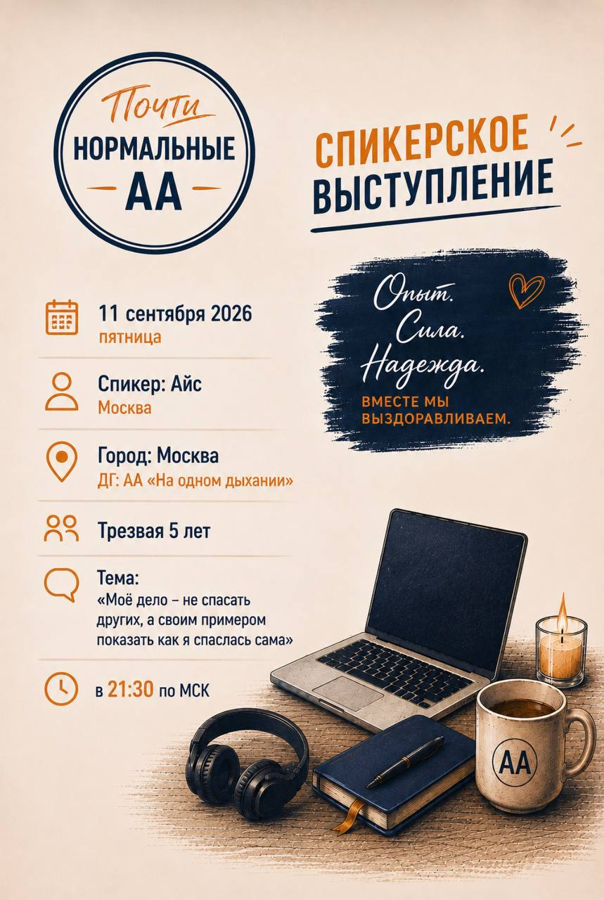
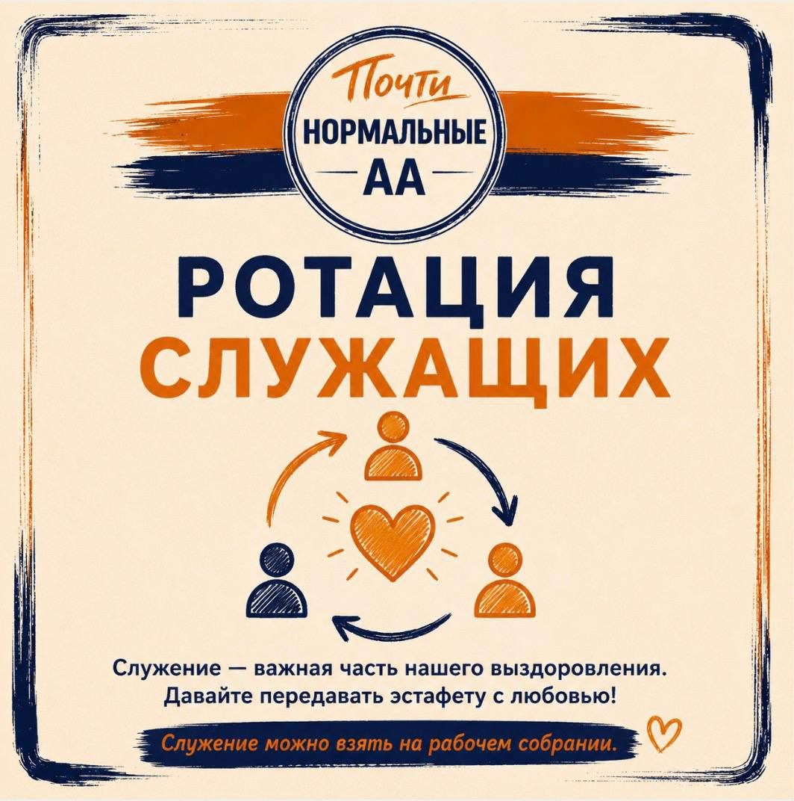
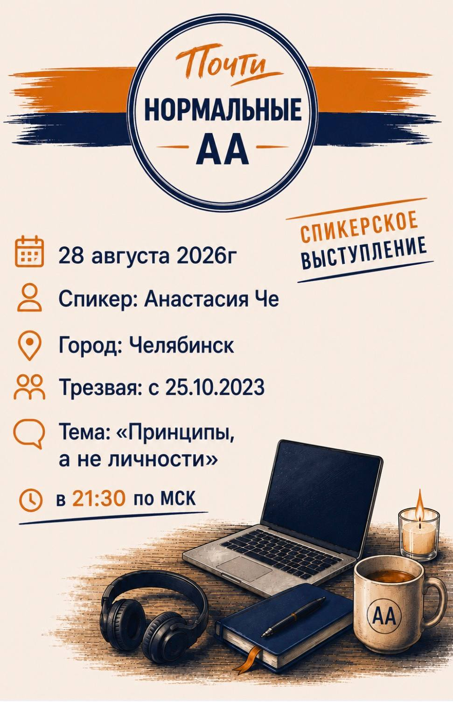
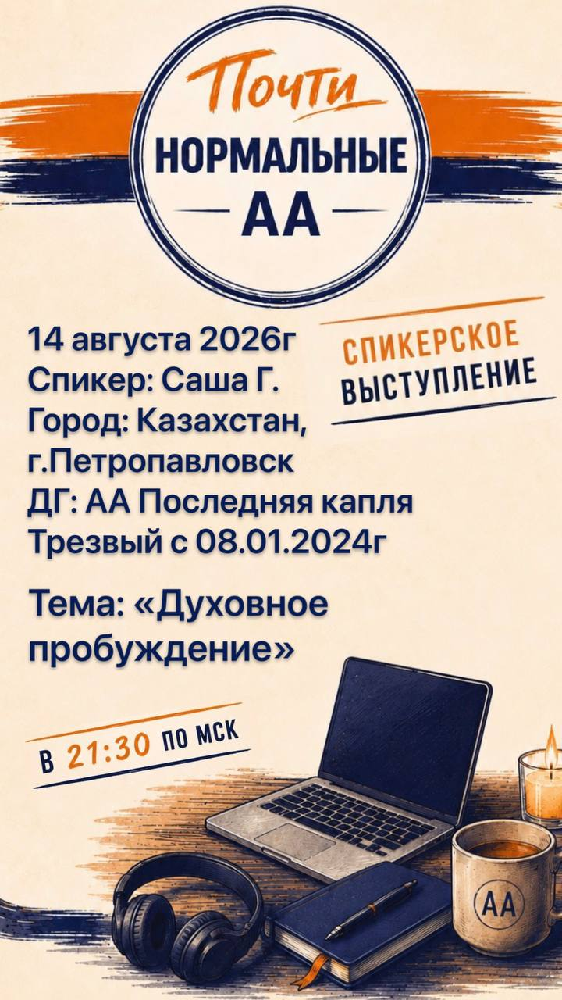
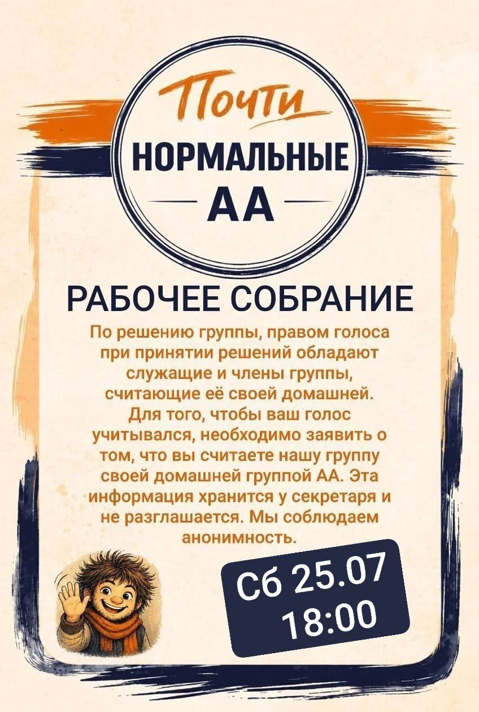
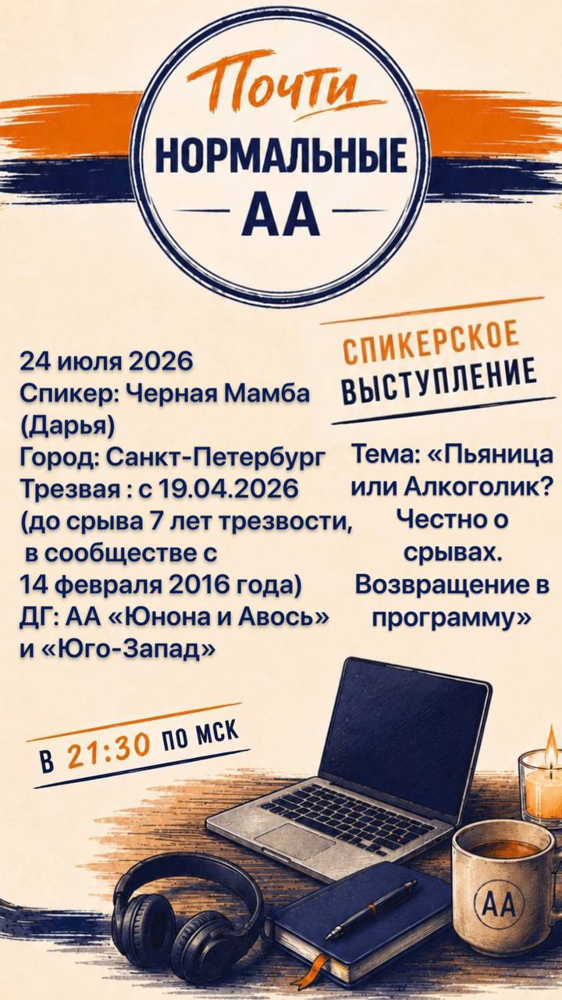
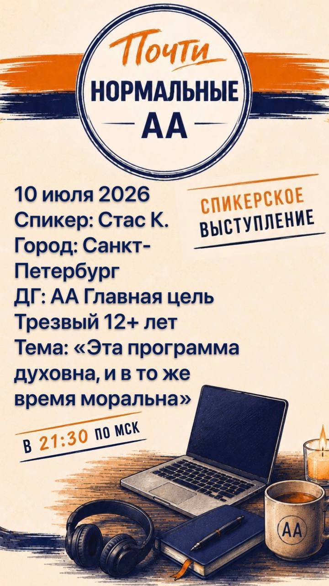
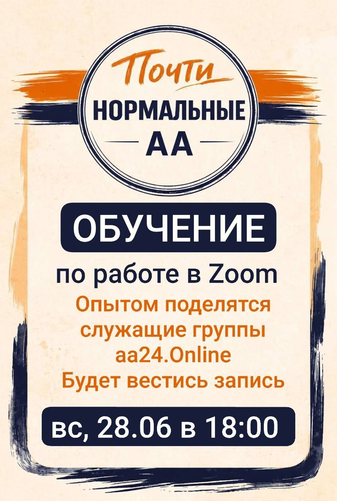

Объявления

«Моё дело — не спасать других, а своим примером показать, как я спаслась сама»
Спикерское выступление. Спикер: Айс, Москва. Домашняя группа — АА «На одном дыхании». Трезвая 5 лет.

Ротация служащих
Плановая смена ведущих собраний, технических ведущих и рассыльных анонсов. Ротация помогает передавать служение другим членам группы и вместе поддерживать жизнь группы.
Служение можно взять на рабочем собрании или написать секретарю группы.

«Принципы, а не личности»
Спикерское выступление. Спикер: Анастасия Че, Челябинск. Трезвая с 25 октября 2023 года.

«Духовное пробуждение»
Спикерское выступление. Спикер: Саша Г., Петропавловск, Казахстан. Домашняя группа — АА «Последняя капля». Трезвый с 8 января 2024 года.

Рабочее собрание
Рабочее собрание домашней группы «Почти нормальные». Правом голоса при принятии решений обладают служащие и члены группы, считающие её своей домашней.

«Пьяница или алкоголик? Честно о срывах. Возвращение в программу»
Спикерское выступление. Спикер: Чёрная Мамба (Дарья), Санкт-Петербург. Домашние группы — АА «Юнона и Авось» и «Юго-Запад». Трезвая с 19 апреля 2026 года.

«Эта программа духовна и в то же время моральна»
Спикерское выступление. Спикер: Стас К., Санкт-Петербург. Домашняя группа — АА «Главная цель». Трезвый более 12 лет.

Обучение работе в Zoom
Служащие группы aa24.online поделятся опытом работы в Zoom. Встреча будет записываться.